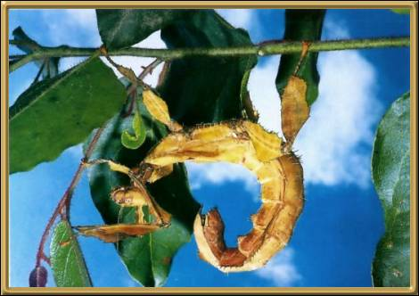

Photographer: Unknown
There are 150 known Australian stick insect species and this is one of the largest. They tend to stay hidden in foliage and are actually quite difficult to find because they really do look like sticks.